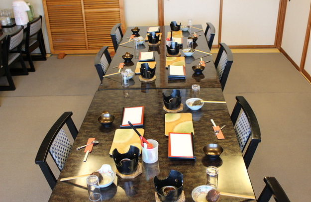

Our Commitment
当店のこだわり
最高のこだわり


Pride & Quality
国産１００％のそば粉と
うどん粉を使用
九重では、国産１００％のそば粉と国産１００％のうどん粉を使用した本格手打ち麺をご提供しています。
安心・安全な国産素材だけにこだわることで、素材本来の風味と旨みを最大限に引き出しています。毎日丁寧に手打ちすることで、お客様に最高の一杯をお届けしています。
国産そば粉100%使用
国産うどん粉100%使用
毎日心を込めて手打ち
落ち着いた和の空間
鹿威しや和の小物で飾られた店内は、まるで日本の原風景のよう。ゆったりと会話を楽しみながら、美味しいお料理をお召し上がりいただけます。

貸切・宴会も対応
最大90名様まで貸切対応可能。ご法事・お祝いごと・会社の懇親会など、様々なシーンでご利用いただけます。お気軽にご相談ください。